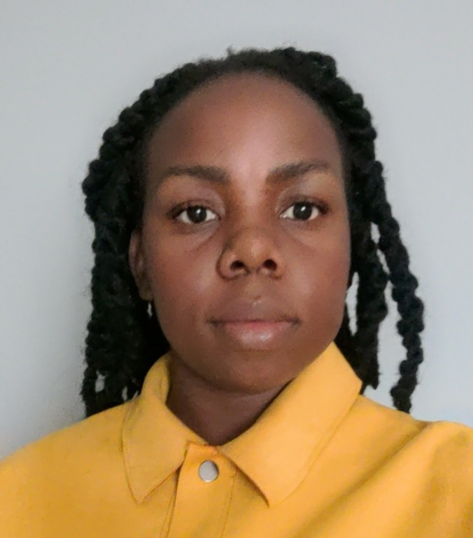
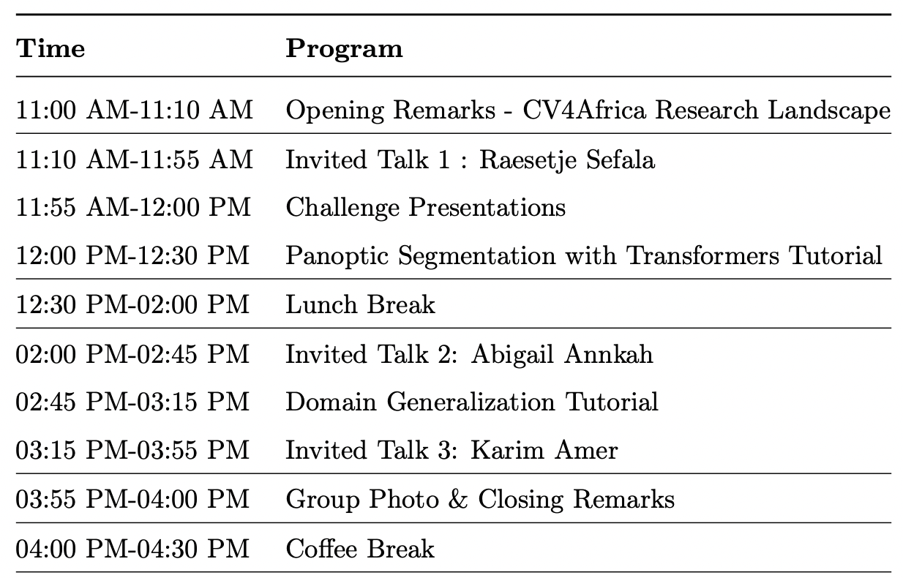
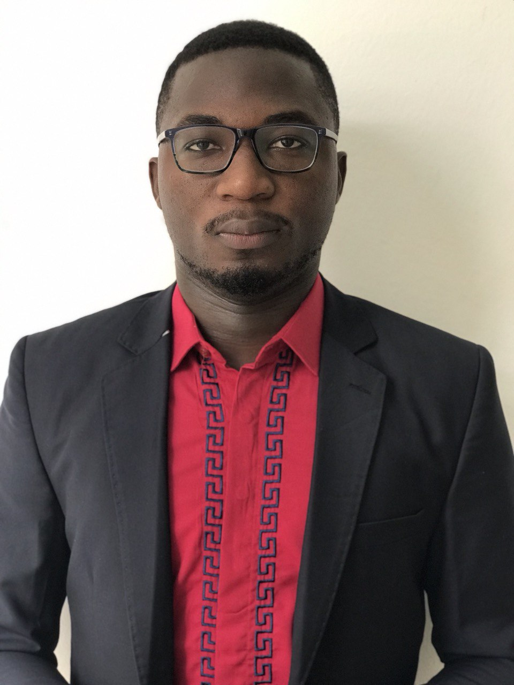
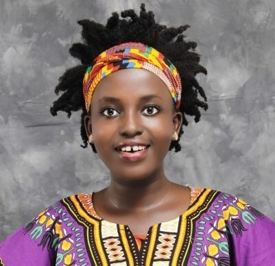

CV4Africa DLI Workshop, Accra, Ghana
September 09, 2023
The 1st CV4Africa Workshop will be held this year co-located with Deep learning Indaba 2023.
The workshop will feature invited talks from prominent researchers and practitioners, a challenge and hand-on tutorials.
We invite all members of the Computer Vision community to attend the workshop.
Computer vision is used in various applications that impact African communities such as, precision
agriculture, satellite imagery understanding, and medical image processing. It is concerned with the
mathematical techniques that include both classical and machine learning based methods towards
achieving the goal of scene and video understanding, and recovering the 3D shape and appearance
of objects in images. Different sub-tasks in Computer Vision include optical flow, motion detection,
tracking, segmentation/grouping, and 3D reconstruction among others. Although, it is widely used
to serve our communities, there exists a current gap in the community based research that lacks
focus on Computer Vision in Africa. We are mainly inspired by other grassroots initiatives in
the African community for both natural language processing (Masakhane) and machine learning
for health (Sisonke Biotik). We aim to launch a community which we call Ro’ya-CV4Africa that
focuses on Computer Vision research for Africans and by Africans. We believe that this bottom-up
community based approach is better able to bring researchers from varying parts of the society and
is inclusive by design. Participatory research, unlike conventional research, defines the research
process itself within a collaborative and accessible framework to all members of the community.
Speakers
Research engineer, Google AI Ghana
Co-Founder & CTO VAIS, Egypt

Research fellow, DAIR institute
Talks:
(AI Research Fellow at the DAIR Institute)
Spatial Apartheid: Constructing a Visual Dataset to Study the Effects of Spatial Apartheid in SA
Abstract: The lack of ground truth data is usually a barrier when researchers are trying to train machine
learning models for real-world applications. Spatial datasets in particular are both complex and
expensive to create. In this talk I will be discussing how we constructed a visual dataset that
allows us to classify neighbourhoods using machine learning and also allows us to study the effects
of spatial segregation in South Africa. While datasets 7 times smaller than ours have cost over $1M
to annotate, our dataset was created with highly constrained resources.
Bio: Raesetje is an AI Research Fellow at the Distributed AI Research(DAIR) institute. Her research focuses
on creating ground truth datasets and using machine learning and other computational social science
techniques to explore research questions with a societal impact. Her current research uses satellite
imagery to study the legacy of spatial apartheid in South Africa, post-Apartheid. Her previous work
involved partnering with various stakeholders and using machine learning techniques to study poverty
and traffic safety in the urban parts of Nigeria and Jakarta, respectively.
(Co-Founder & CTO VAIS, Egypt)
Combining Deep Learning and Classical Approaches to Predict Tropical Storms Speeds using Satellite Data
Abstract: Tropical cyclones unfortunately can cause thousands of deaths and billions of dollars of damage, which
makes their real time monitoring important to better assess their danger and help save people's lives.
In this talk, Karim Amer will discuss his 2nd solution to the "Wind-dependent Variables: Predict Wind
Speeds of Tropical Storms" challenge organized by Radiant Earth Foundation and NASA.
Bio: Karim is Co-Founder & CTO, VAIS, a deeptech startup that brings the power of Geo-spatial Intelligence and AI to the hands
of African and Egyptian farmers. He has been applying AI for the last six years to challenging interdisciplinary
problems in several areas including Agriculture, Earth Observation, Medical Imaging, Material Science, Bioinformatics,
and Geophysics. He previously worked at Siemens Healthineers Technology Center, NJ, USA on the development of cutting-edge
AI models that can be used in multiple clinical applications which turned into 3 patents (pending approval). Karim won
several international AI competitions and has become the first Kaggle Master of Data Science Competitions from Egypt,
among a few in the region and top 1% worldwide.
(Research engineer, Google AI Ghana)
Computer Vision for Remote Sensing: Past, Present and Future
Abstract: Remote sensing (RS) and computer vision (CV) are two rapidly developing fields with the
potential to revolutionize our understanding of the world. RS provides information about
objects or phenomena without direct contact, while CV extracts useful data from digital
images or videos.
The combination of CV and RS has led to significant advances in a variety of applications,
including earth observation, natural disaster detection, military surveillance, urban planning,
crop monitoring, and environmental assessment.
In the past, the availability of data and computational resources limited the use of CV
methods for RS. However, recent advances in Deep Learning have made it possible to
develop more powerful and accurate CV algorithms for RS.
The role of CV in RS is expected to continue to grow in the future. The availability of large
datasets, pretrained models, and the development of new sensors will enable the development
of even more advanced CV algorithms for RS.
This talk will provide an overview of the past, present, and future of CV for RS. It will
discuss the challenges and opportunities of this field, and highlight some of the recent
advances in deep learning for RS, including some work from the Google Accra research lab.
Bio: Abigail Annkah is a Google AI Research Software Engineer in Ghana. She is passionate
about using computer vision and optimization to address global challenges, such as bridging
information gaps in developing regions, improving health, education, and agriculture. She is
also actively involved in mentorship programs and is always looking for opportunities to
collaborate with others who share her vision.
Her undergraduate studies at the University of Ghana, Legon, in Accra provided her with a
foundation in Mathematics and Statistics. She was awarded a full scholarship for a Master of
Science in Machine Intelligence from the African Institute of Mathematical Sciences (AIMS)
in Kigali, Rwanda. Prior to residency at Google, she worked on several projects, including the
Application of Image Analysis to Advanced Complex Microbial Images, Spatio-temporal
modeling and Malaria prediction in Sub-Saharan Africa, and Image Denoising using the
Diffusion Equations with explicit numerical methods. She worked on mapping built-up
environments in Africa using satellite imagery during her residency at Google, and is a
contributor to Google's Open Buildings Dataset.
In addition to her technical skills, Abigail is a strong advocate for diversity and inclusion in
STEM fields. She is an ambassador for Mind the Gap
, a Google initiative to encourage female students to pursue careers in STEM, and was mentor for the African Institute of Mathematical
Sciences (AIMS) Ghana's Girls in Mathematical Sciences Program
(GMSP) in the past. She was a member of a Rwandan team that engaged high school teachers and teacher in-training
for problem solving for Mathematics students, and also participated in a pilot version of the
Rwandan Mathematical Olympiad.
Tutorials:
Program Schedule:
Room: Auditorium, Spetember 09, 2023
Zoom Link
Zoom Meeting ID: 932 4408 8288, Pass Code: 088848

Organizers

Assistant Professor, Ontario Tech University, Canada

Research and Teaching Assistant, AMMI/AIMS, Senegal

MSc student, Queen’s University, Remote-Egypt

Deep Learning Researcher, Nile University, Egypt

PhD Student, University College London, UK

PhD student in Statistics, UC Davis, US

MSc, Ontario Tech University

AI Ethics| Ariel Foundation Int.|NLP for Social Good and Fairness
i

Graduate Research and Teaching Assistant, UBC, Canada

Msc Applied Statistics, New Mexico State university, US

PhD student, University of Angers, France
Challenge
The Legacy of Spatial Apartheid Machine Learning Challenge
The spatial apartheid dataset has high-resolution satellite images of neighborhoods in South Africa in 2011.
It allows the training of a machine learning model that accurately predicts the class of a neighborhood (wealthy area, non-wealthy area, non-residential neighborhood, or background) based on the image.
This prediction provides insights on the evolution of spatial apartheid over time and how the demographics and development of neighborhoods in South Africa have changed.
Challenge Dates:
- Start: July 1st
- Deadline: August 31
Challenge Prizes:
- 1st winner: 500$ and the opportunity to present in CV4Africa Workshop, DLI, Accra, Ghana, 2023 (remote or in-person).
- 2nd winner: 300$
- 3rd winner: 200$
More details.
Sponsors:
Code of Conduct
Inspired by
Masakhane CoC we follow a similar pledge:
"In the interest of fostering an open and welcoming environment, we as contributors and maintainers pledge to
making participation in our project and our community a harassment-free experience for everyone, regardless of age,
body size, disability, ethnicity, sex characteristics, gender identity and expression, level of experience, education,
socio-economic status, nationality, personal appearance, race, religion, or sexual identity and orientation."
Examples of behavior that contributes to creating a positive environment include:
- Using welcoming and inclusive language
- Being respectful of differing viewpoints and experiences
- Gracefully accepting constructive criticism
- Focusing on what is best for the community
- Showing empathy towards other community members
Examples of unacceptable behavior by participants include:
- The use of sexualized language or imagery and unwelcome sexual attention or advances
- Trolling, insulting/derogatory comments, and personal or political attacks
- Public or private harassment
- Publishing others' private information, such as a physical or electronic address, without explicit permission
- Other conduct which could reasonably be considered inappropriate in a professional setting
- Being asked to stop a certain behaviour and giving a response of "just joking" instead of stopping such behaviour
 RO'YA
RO'YA